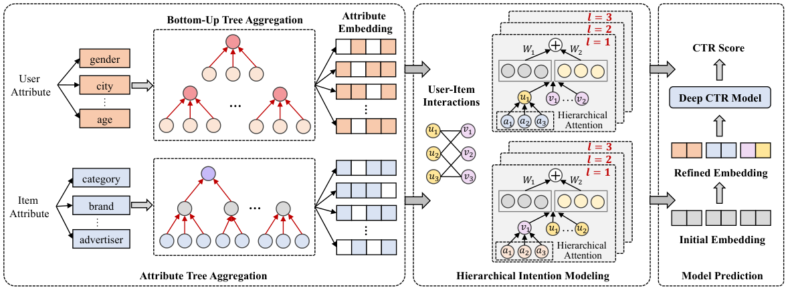
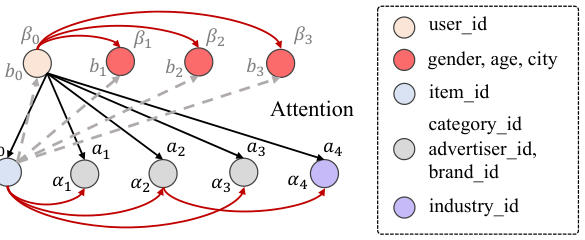

HIEN: Hierarchical Intention Embedding Network for Click-Through Rate Prediction (层次意图嵌入网络)
- 会议/期刊: SIGIR 2022
- 作者与机构: Zuowu Zheng, Xiaofeng Gao, Guihai Chen (上海交通大学)；Changwang Zhang (腾讯)
- 推荐链路定位: 精排（Embedding 层前置模块，可插入任意 CTR 网络）
- 研究方向: CTR/CVR 预估与特征交叉 / 图神经网络推荐
- 论文原文: https://arxiv.org/abs/2206.00510v1
- 开源代码: 暂未开源
TL;DR (1分钟核心速览)
现有 CTR 模型把 item 属性（advertiser、industry、brand）当作彼此独立的 ID one-hot 特征，丢失了属性之间的树状层级依赖；同时 DIN/DIEN 类兴趣建模只做"用户-物品"粒度，缺乏"用户对哪些属性敏感、物品因哪些用户属性被点击"的双向意图刻画。HIEN 把属性图拆解为属性树做自底向上聚合精修属性嵌入，再用层次注意力同时学习 user intent 与 item intent，最终把精修后的嵌入注入 DeepFM 等基座。在阿里、Tmall 与腾讯生产数据上按"前 7 天训练 / 次日测试"的时间切分评估，AUC 分别较最强基线 DG-ENN 提升 0.86%、0.76%、0.49%（LogLoss 降低 4.81%、2.08%、0.41%）。
Background & Motivation (背景与核心矛盾)
- 主流范式: CTR 界长期沿"Embedding & MLP"两条主线演进：一条是 FM/DeepFM/AutoInt+ 的高阶特征交叉，另一条是 DIN/DIEN/DSIN 的用户历史行为兴趣建模。
- 前人局限: 其一，
advertiser_id、industry_id之间存在天然的父子归属关系，传统做法把它当同层 ID 特征，结构信息被抹平；其二，兴趣建模只看"用户点了什么"，无法回答"该用户是冲着品类还是价格点的"、"该物品是被何种年龄段用户点中的"，可解释性缺失。 - 核心洞察 (Key Insight): 属性本身语义与分布差异极大，直接套用 GCN/NGCF 的邻域卷积会把异构属性节点混在一起引入噪声；正确做法是只在同一条属性树的父子边上做自底向上聚合，保留各属性的固有特性。
- 本文切入点: 把"结构精修"与"意图建模"放在 Embedding 层而非特征交叉层完成，从而可与任意现成 CTR 网络正交组合。

Method (核心方法设计)
1. 整体框架 (Overall Architecture)
HIEN 由三个模块串联：先由点击日志构建用户-属性树 \(G^t_u\)、物品-属性树\(G^t_v\)（item 为叶节点、属性为父节点）及用户-物品二部图\(G_{uv}\)；随后在属性树上执行自底向上聚合，把父节点嵌入用子节点（含更深层孙属性）加权更新，得到精修属性嵌入\(E'\)中的\(e'_{A_u}, e'_{A_v}\)；接着在二部图上做\(L\)层传播，每层传播前先用层次注意力把精修后的属性嵌入按"意图权重\(\times\)固有重要性"加权汇入用户/物品节点嵌入，得到意图感知的\(e'_u, e'_v\)；最终整个精修嵌入集合\(E'\) 被喂入 DeepFM 等基座得到 CTR 分数。训练端到端，与基座联合反向传播。
flowchart TD
A["点击日志: 用户/物品属性 + 用户-物品交互"] --> B["构图: 用户-属性树 / 物品-属性树 / 二部图"]
B --> C["属性树自底向上聚合 (CP-Agg)"]
C --> D["层次注意力: user intent + item intent"]
D --> E["二部图 L 层意图感知传播"]
E --> F["精修嵌入 E' 注入 DeepFM 基座"]
F --> G["CTR 分数"]2. 关键设计拆解 (Key Designs)
-
属性树自底向上聚合 + CP-Agg 聚合器：常规 GCN 让中心节点同时吸收多类邻居，噪声大；HIEN 只沿树边聚合子节点。作者还对比了四种聚合器，最终采用的 CP-Agg 同时建模"中心-子节点"的乘积与拼接两类交互：\(g(\boldsymbol{e}_h,\boldsymbol{e}_{C_h})=\sigma\big(\boldsymbol{W}_1\boldsymbol{e}_h+\sum_{i\in C_h}(\boldsymbol{W}_1\boldsymbol{e}_i+\boldsymbol{W}_2(\boldsymbol{e}_h\odot\boldsymbol{e}_i)+\boldsymbol{W}_3(\boldsymbol{e}_h\oplus\boldsymbol{e}_i))\big)\)。直觉上 Element-wise 乘积捕捉属性共现强化信号，拼接保留原始语义，从而在不混叠异构属性的前提下放大父子交互。
-
层次意图建模（双向意图 + 层级加权）：以用户对物品属性的意图为例，物品嵌入不是属性嵌入的等权求和，而是 \(\boldsymbol{e}^{(1)}_v = a_0\alpha_0\boldsymbol{e}^x_0 + a_1\alpha_1\boldsymbol{e}^x_1 + a_2(\alpha_2\boldsymbol{e}^x_2 + a_4\alpha_4\boldsymbol{e}^x_4) + a_3\alpha_3\boldsymbol{e}^x_3\)。其中 \(\alpha_i\)是可学习的固有重要性（静态、全局），\(a_i\)是用户\(u\)对属性\(x_i\)的动态注意力，由个性化内积给出：\(a_i(u,x_i)=\frac{\exp(\boldsymbol{e}^{(0)}_u\cdot\boldsymbol{e}^x_i)}{\sum_{x'\in A_v}\exp(\boldsymbol{e}^{(0)}_u\cdot\boldsymbol{e}^{x'})}\)。关键在于式子中把子属性与父属性写进同一括号\(\alpha_2\boldsymbol{e}^x_2+\alpha_4\boldsymbol{e}^x_4\)，使树层级关系直接被注意力加权吸收，而非事后拼接。反向同理，物品对用户属性（gender/age/occupation）的意图由\(b_i\beta_i\)加权，\(b_i(v,y_i)=\frac{\exp(\boldsymbol{e}^{(0)}_v\cdot\boldsymbol{e}^y_i)}{\sum_{y'\in A_u}\exp(\boldsymbol{e}^{(0)}_v\cdot\boldsymbol{e}^{y'})}\)。

- 训练目标、负采样与推理开销：不做负采样，直接以日志曝光样本做点击二分类，损失为带 \(L_2\)的交叉熵\(\mathcal{L}(\Theta)=-\frac{1}{|D|}\sum_{(x,y)\in D}\big(y\log\hat{y}+(1-y)\log(1-\hat{y})\big)+\lambda\|\Theta\|_2\)。所有图结构在训练前离线一次性构建（静态图，无采样邻居），属性树聚合与\(L\) 层传播只增加矩阵乘与内积开销，与 DG-ENN 等多层图传播相比计算量更小，可在线部署。
Experimental Setup & Evaluation Protocol (实验设置与评估协议)
- 数据集与预处理: 三个数据集均保留原始日志样本，不做
5-core过滤（广告场景物品天然长尾）；Alibaba 正样本率仅 5.15%，属典型极度不平衡的广告点击分布。
| 数据集 | #Train | #Test | #Fields | #Features | #Items | 正样本率 |
|---|---|---|---|---|---|---|
| Alibaba | 5,544,213 | 660,694 | 16 | 1,657,981 | 512,431 | 5.15% |
| Tmall | 4,382,613 | 505,228 | 9 | 1,480,725 | 565,888 | 10.23% |
| Tencent | 5,240,498 | 873,604 | 17 | 1,248,065 | 347,206 | 13.00% |
- 数据划分与防穿越 (Splitting Strategy): 严格全局时间戳切分——Alibaba 用 5.06–5.12 七天训练、5.13 测试；Tmall 用"双 11"前六个月建模、当天测试；Tencent 前六天训练、第七天测试。避免了 CTR 场景中常见的随机切分穿越。
- 排名评测协议 (Ranking Protocol): 不采用排序协议，而是全样本点级打分评估：对测试集全部曝光日志逐条算 \(\hat{y}\)，计算 AUC 与 LogLoss（\(\mathrm{AUC}=\frac{1}{N^+N^-}\sum_{x^+\in D^+}\sum_{x^-\in D^-}\mathbb{I}(f(x^+)>f(x^-))\)）。这相当于无负采样的全量日志评估，比 Sampled Ranking 更贴近线上分布。
- 对比基线与超参设置: 覆盖浅层 (LR/FM/FwFM)、深层 (DeepFM/AutoInt+/PNN)、兴趣 (DIN/DIEN/DSIN)、图模型 (GIN/Fi-GNN/DG-ENN) 四类。嵌入维度 \(K=128\)，MLP 三层 200/800/1（PReLU/PReLU/Sigmoid），Adagrad lr=0.001，batch 4096，每个实验跑 5 次取均值±标准差，并做 t-test（\(p<10^{-6}\)）。
Key Experimental Results (实验关键数据)
1. 主实验对比 (Main Results)
| Model | Alibaba AUC | Alibaba LogLoss | Tmall AUC | Tmall LogLoss | Tencent AUC | Tencent LogLoss |
|---|---|---|---|---|---|---|
| LR | 0.6157 | 0.2638 | 0.8724 | 0.1985 | 0.7212 | 0.3668 |
| FwFM | 0.6427 | 0.2526 | 0.9075 | 0.1791 | 0.7335 | 0.3617 |
| DeepFM | 0.6594 | 0.2447 | 0.9184 | 0.1772 | 0.7370 | 0.3532 |
| AutoInt+ | 0.6508 | 0.2506 | 0.9126 | 0.1789 | 0.7313 | 0.3604 |
| DIN | 0.6523 | 0.2364 | 0.9155 | 0.1785 | 0.7394 | 0.3510 |
| DSIN | 0.6708 | 0.2308 | 0.9313 | 0.1684 | 0.7442 | 0.3477 |
| DG-ENN | 0.6740 | 0.2265 | 0.9396 | 0.1635 | 0.7489 | 0.3416 |
| HIEN | 0.6798 | 0.2156 | 0.9467 | 0.1601 | 0.7526 | 0.3402 |
| Improv. (vs. DG-ENN) | +0.86% | -4.81% | +0.76% | -2.08% | +0.49% | -0.41% |
2. 消融实验 (Ablation Study)
| 变体 | Alibaba AUC (Δ) | Tmall AUC (Δ) | Tencent AUC (Δ) |
|---|---|---|---|
| w/o user_agg | 0.6796 (-0.0002) | 0.9459 (-0.0008) | 0.7521 (-0.0005) |
| w/o item_agg | 0.6783 (-0.0015) | 0.9428 (-0.0039) | 0.7496 (-0.0030) |
| w/o user_intent | 0.6786 (-0.0012) | 0.9432 (-0.0035) | 0.7511 (-0.0015) |
| w/o item_intent | 0.6791 (-0.0007) | 0.9450 (-0.0017) | 0.7517 (-0.0009) |
| HIEN (full) | 0.6798 | 0.9467 | 0.7526 |
聚合器对比：CP-Agg (0.6798/0.9467/0.7526) > NGCF (0.6789/0.9461/0.7520) > LightGCN (0.6784/0.9457/0.7514) ≈ GCN (0.6781/0.9452/0.7506)。
3. 关键实验发现 (Key Findings)
- 去掉物品属性树聚合是最大损伤：三数据集 AUC 分别掉 0.0015/0.0039/0.0030，显著高于去掉用户属性树的 0.0002/0.0008/0.0005——说明广告场景中 item→category→advertiser→industry 这条层级链承载了最核心的结构信号，而用户属性本身近似扁平，树聚合收益有限。
- 意图建模两项均不可拆：去掉 user_intent 在 Tmall 掉 0.0035、去掉 item_intent 掉 0.0017，且都大于各自对应的"树聚合"损伤，证明"用户对哪些物品属性敏感"的动态注意力贡献超过了静态结构精修本身；LightGCN 式聚合反而因丢弃中心节点表示在广告稀疏图上劣于 NGCF，印证了本文"结构简单图不宜过度平滑"的判断。
- 可作为通用插件带来二次增益：将 HIEN 精修嵌入替换原输入后，DSIN 在 Alibaba/Tmall/Tencent 上 AUC 分别再涨 1.10%/0.72%/1.89%，DG-ENN 涨 1.14%/0.95%/1.43%，说明收益来自嵌入层而非与特定交叉网络的耦合；同时层数实验显示 HIEN-3 后增层收益边际化，三阶关系已足够。
Highlights & Limitations (亮点、对比与审稿批判)
- 与代表作对比 (vs. Prior Work): 相比 DeepFM/AutoInt+ 把属性当同层 ID 做交叉，HIEN 显式引入属性层级先验；相比 DG-ENN/Fi-GNN 在整图上做卷积或节点交互，HIEN 把聚合限制在树边以避开异构属性噪声；相比 DIN/DIEN 只做用户侧行为注意力，HIEN 补上了 item intent 这一反向分支，并把层级结构直接写进注意力公式。
- 可迁移亮点: ①"固有重要性 \(\alpha_i\)× 动态注意力\(a_i\)"的乘积式加权，可低成本迁移到任何需要对多字段做注意力的精排模型；②以 Embedding 精修模块形式插入现有基座、不改动主网络的做法，是工业侧最易落地的改造范式。
- 审稿级局限批判: ①属性树需人工依据业务语义预先定义（谁是谁的父节点），层级错误会直接污染聚合，缺乏自动学树结构的能力；②静态全图构建在用户/物品规模膨胀时需离线重建，文中未给出图更新频率与内存开销分析；③对比基线多为 2020 年前模型，缺少与近年 Transformer-based CTR（如 DHEN、FAT 类）的对照，也未报告线上 A/B 的 CTR/收入增益。
Rating (四维评分)
- 方法创新性 (Novelty): ⭐⭐⭐⭐ （把属性层级先验写进注意力括号内的做法简洁有效，但树聚合与双向注意力本质是已有组件的组合式创新，理论分析偏弱）
- 评估协议与实验扎实度 (Protocol & Experiments): ⭐⭐⭐⭐ （三个数据集含腾讯生产集、严格时间切分、5 次重复 + t-test，消融/聚合器/层数/兼容性四组实验齐备，唯缺点是无排序协议与线上 A/B）
- 写作与数学规范度 (Clarity & Rigor): ⭐⭐⭐⭐ （Eq.14 的层级括号写法直观，四个聚合器公式对比清晰；但 \(\alpha_i\)与\(a_i\)的符号在正文中偶有混用，图传播与树聚合共用\(g(\cdot)\) 表述略含糊）
- 工业落地与复现价值 (Industrial & Practical Value): ⭐⭐⭐⭐ （即插即用插件在 DSIN/DG-ENN 上均有稳定增益，推理开销低；但未开源代码，属性树构建依赖业务人工先验，复现门槛中等）